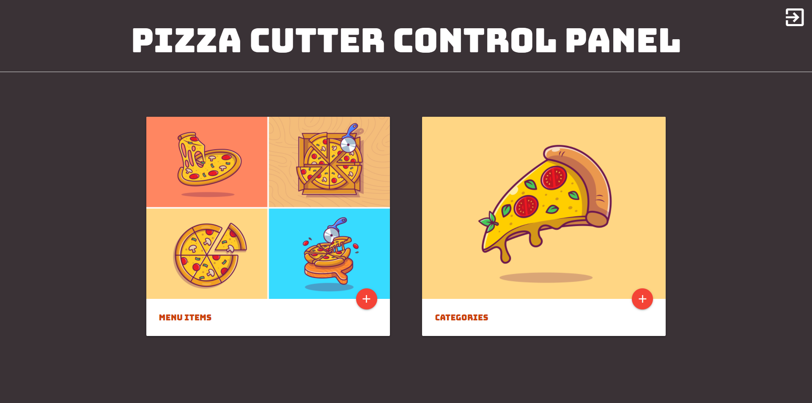
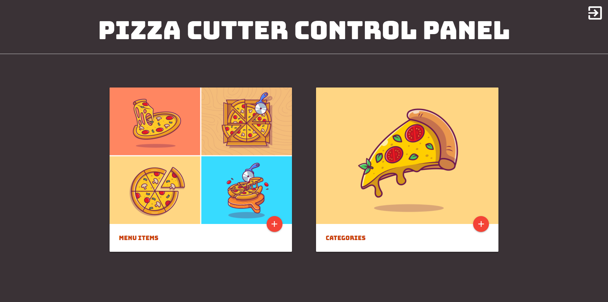

Projects
Study Kanji
Designed for those looking to learn Japanese in a simple and user friendly way. Understanding the Kanji is a very basic stepping stone as an introduction to the language
Live Site - https://desasser.github.io/Japanese-Study-App/ GitHub Repo - https://github.com/desasser/Japanese-Study-App
Weather Dashboard
Incorporates Weather API- current weather, 5-day forecast, UV Index, and icon database. Use can search for a city, and recieve up to date weather information. Website saves the users previous searches to easily revisit the weather conditions of previously searched cities.
Github: https://github.com/guaaur04/api-weather-dashboard Live Site: https://guaaur04.github.io/api-weather-dashboard/
Password Generator
The 🔒 Random Password Generator 🔒 creates passwords between 8-128 characters.
Live Site - https://desasser.github.io/Japanese-Study-App/
GitHub Repo - https://github.com/desasser/Japanese-Study-App
 

Restaurant Administrative Dashboard
Built for Pizza Cutter, Michigan since 1975. This appliction allows restaurant managers ability to easily edit the content of their website.
Live Site - https://pizzacutterapp.herokuapp.com/pizzacutter
GitHub Repo - https://github.com/zhuxiaoyu1019/online-order-system